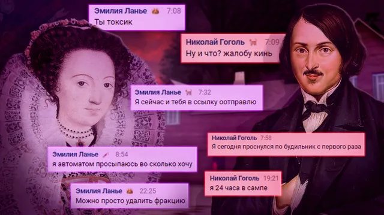

Сюрреализм
ВКонтакте
☂ Возвращаясь к летописи сюрреалистических писаний хочется сделать акцент конкре…
4 марта 2021 · оригинал во ВКонтакте ↗

☂ Возвращаясь к летописи сюрреалистических писаний хочется сделать акцент конкретно на одном персонаже, который уже раз появлялся у нас и еще больше запутал наше понимание разбираемого вопроса о мироустройстве, которое спроектировала Зомби Ферма вокруг человечества, что ж, для начала стоит вспомнить диалог между Львом Толстым и [https://vk.com/wall-196461758?q=%23Сюрреализм&w=wall-196461758_3566|Уильямом Шекспиром], а во вторых стоит учесть тот факт, что по общим данным герой сегодняшней картины жил в одну временную эпоху вместе с одним из известных нам ключевых сторонников аппозиции Фермы, то есть с [https://vk.com/wall-196461758?q=%23Сюрреализм&w=wall-196461758_3614|А. С. Пушкиным] собственной персоной, из чего можно предположить, что они вполне могли быть заодно, если базироваться на известной нам базе данных.
> Что ж, как уже многим доподлинно известно, Шекспир - это лишь образ под которым скрывалась интеллигентная элита Зомби Фермы и сегодняшняя проекция, которую мы вам предоставляем, не оставит сомнений даже у самых скептически настроенных персон, но это касается лишь того, что Шекспир - одно из ключевых звеньев Фермы, мы не исключаем того, что он мог скомпрометировать наши представления об истории таким образом, чтобы мы засомневались в его существовании, тем самым внедрив в метафизическое пространство лишь мысль о том, что он - она, тем самым стоило её лишь кому-то подхватить и его замысел удался, но не суть, гораздо интереснее возможности верхушек проекта, они же не могут быть безграничными, хоть они и смогли пустить свои корни во все аспекты жизни людской..
> Последнюю пророненную фразу так называемой Эмилии, она же Шекспир, можно интерпретировать абсолютно по-разному, возможно это лишь демонстрация силовой структуры Фермы, мол если они могут просто взять и удалить фракцию, то им не представляет трудности совершить что-то более значимое, а возможно это вариант вольности конечного уровня осознания своей бесовской сущности и возможный вариант смены стороны, быть может Гоголю удалось осуществить некую часть плана Пушкина и под фракцией подразумевается сама Ферма???
#Сюрреализм@criticssteam #106
> Что ж, как уже многим доподлинно известно, Шекспир - это лишь образ под которым скрывалась интеллигентная элита Зомби Фермы и сегодняшняя проекция, которую мы вам предоставляем, не оставит сомнений даже у самых скептически настроенных персон, но это касается лишь того, что Шекспир - одно из ключевых звеньев Фермы, мы не исключаем того, что он мог скомпрометировать наши представления об истории таким образом, чтобы мы засомневались в его существовании, тем самым внедрив в метафизическое пространство лишь мысль о том, что он - она, тем самым стоило её лишь кому-то подхватить и его замысел удался, но не суть, гораздо интереснее возможности верхушек проекта, они же не могут быть безграничными, хоть они и смогли пустить свои корни во все аспекты жизни людской..
> Последнюю пророненную фразу так называемой Эмилии, она же Шекспир, можно интерпретировать абсолютно по-разному, возможно это лишь демонстрация силовой структуры Фермы, мол если они могут просто взять и удалить фракцию, то им не представляет трудности совершить что-то более значимое, а возможно это вариант вольности конечного уровня осознания своей бесовской сущности и возможный вариант смены стороны, быть может Гоголю удалось осуществить некую часть плана Пушкина и под фракцией подразумевается сама Ферма???
#Сюрреализм@criticssteam #106